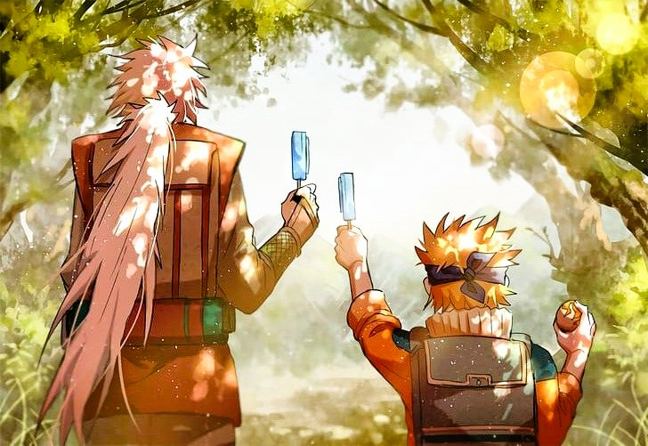
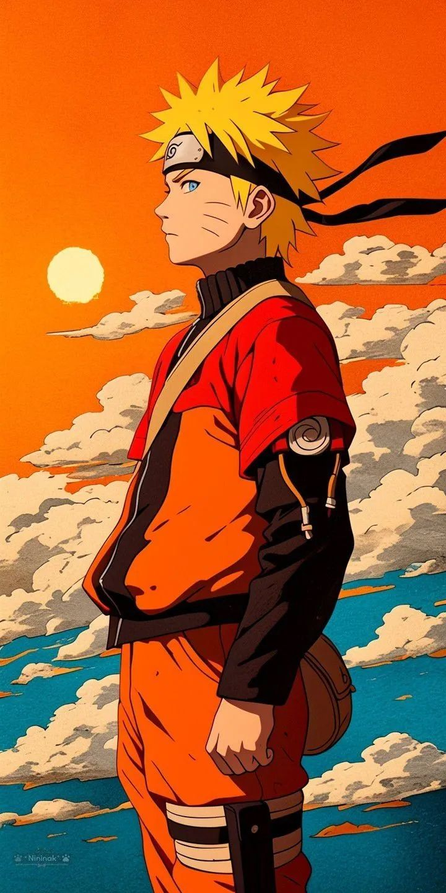
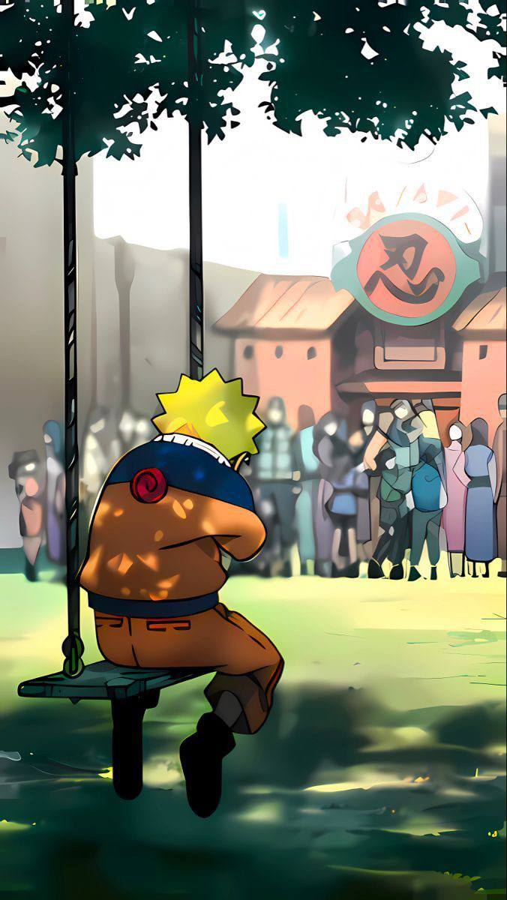
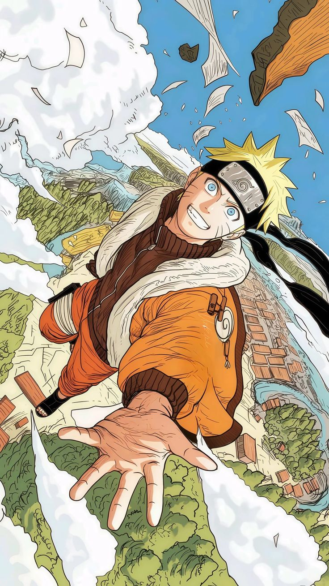
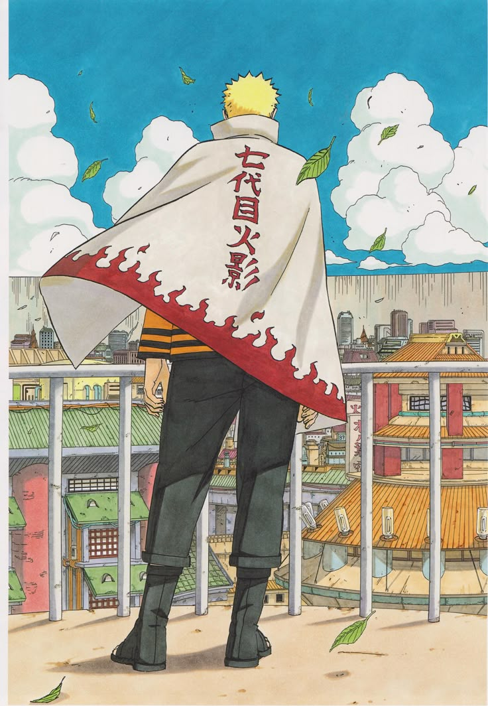
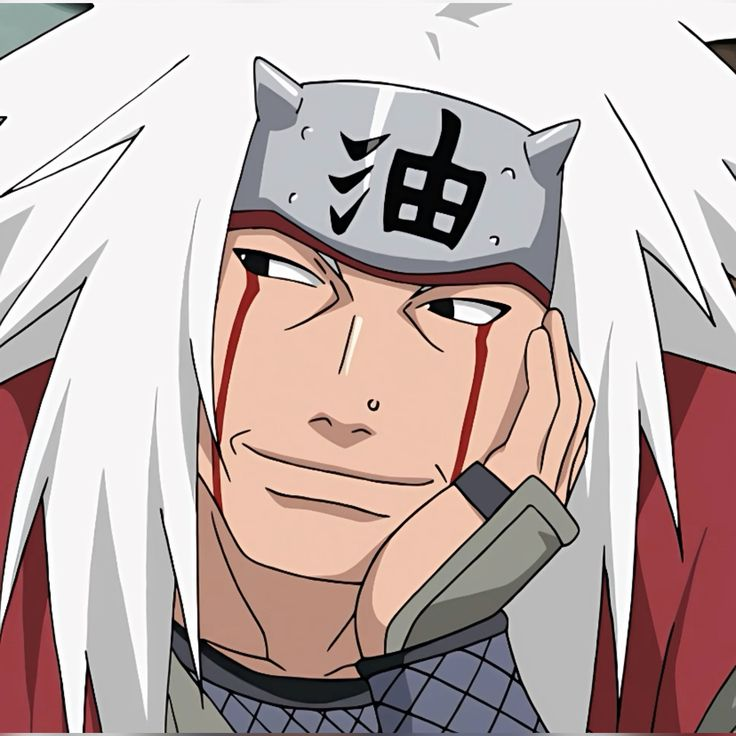
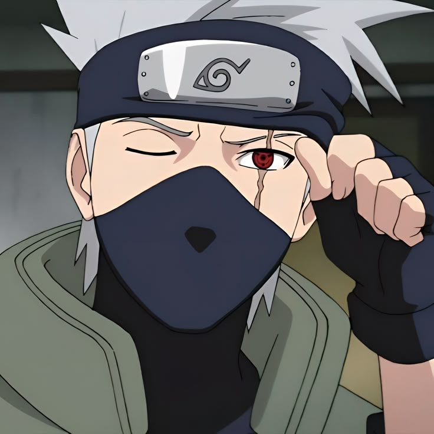
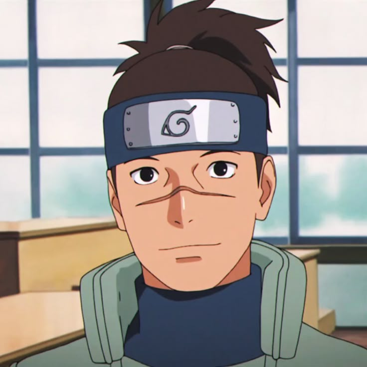
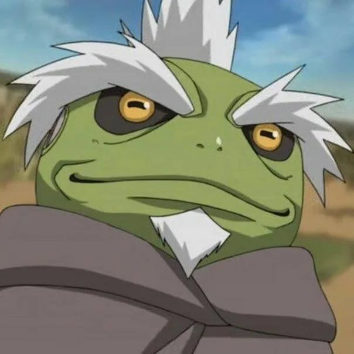

CHAKRA AWAKENING • チャクラ覚醒
THE WILL OF FIRE
The strength to endure. The will to protect.

From a feared and ostracized orphan carrying the Nine-Tails beast to the legendary savior of the shinobi world. Witness the unbreakable journey of perseverance, bonds, and destiny.

The strength to endure. The will to protect.





The mentor who stood by Naruto and taught him teamwork.

The first person in Konoha who recognized Naruto’s humanity.

Guided Naruto through Mount Myōboku's Senjutsu discipline.